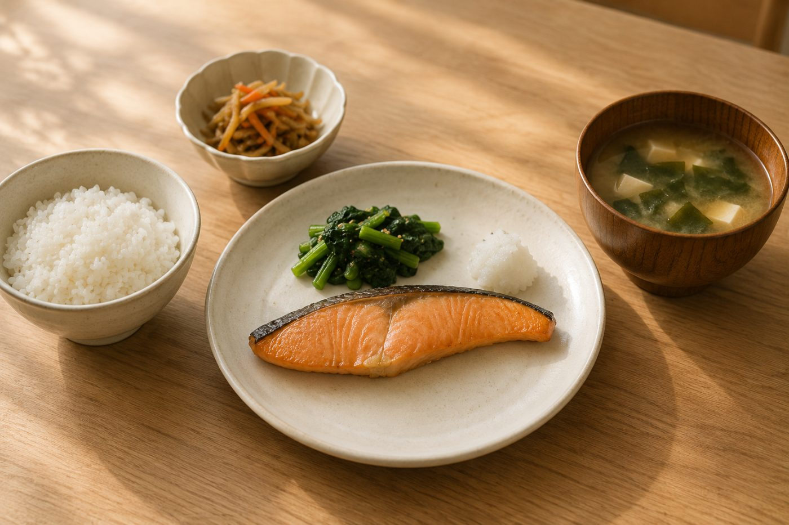

BLOATING
体重は同じなのに、
入らない。
試着の日にドレスがきつい。体重は変わっていない。この場合、原因は脂肪ではありません。数日で戻る種類のものです。

先に結論です。お腹の張りはガスと水分です。前日の食事を変えるだけで翌日に効きます。試着や式の前日に何を避けるかを決めておけば、この問題は起きません。
前日に避けるもの
| 避けるもの | 理由 |
|---|---|
| 炭酸飲料 | そのままガスになります |
| 豆類・きのこ・ごぼう | 食物繊維が多くガスが出やすい |
| キャベツ・ブロッコリー | 同じ理由。普段より増やさない |
| ガムを噛む | 空気を飲み込みます |
| 早食い | 空気を一緒に飲み込みます |
| 乳製品を大量に | 人によって合わないことがあります |
これらは普段は健康的な食品です。禁止ではなく、試着の前日だけ避けるという話です。
食物繊維は増やさない
体づくりのために野菜を増やした結果、お腹が張るようになる人がいます。急に増やすと腸内で発酵してガスが出ます。量を増やすなら数週間かけて徐々に。
逆に、普段から摂っている人が試着の前日だけ減らすのは有効です。
前日にやること
- よく噛む。早食いは空気を飲み込みます。それだけでお腹が張ります
- 夕食を軽めに、早めに。抜くのではなく量を落とす。就寝3時間前までに
- 水は普段どおり。控えると逆にむくみます
- 軽く歩く。腸が動くとガスが抜けます
張りと脂肪の見分け方
朝と夜で差が大きいなら張りです。朝は入るのに夕方にきつくなるのは、脂肪ではありません。逆に朝から入らない場合は、期間をかけた対処が必要です。
試着の予約は午前に取るのが確実です。夕方には誰でも張ります。
期間をかけた対処はウエストは何週間で締まるのかに。
普段から張りやすい場合
常に張っている状態が続くなら、食事の内容を整えるほうが早い。外食が続く週に張りやすくなる人が多く、これは塩分と早食いの両方が原因です。
最終フィッティングの前に
この日の状態でドレスのサイズが確定します。張っている状態で採寸すると、当日は緩みます。逆に極端に絞った状態で合わせると、当日入らないことがあります。
普段の状態で臨むのが正解です。前日だけ気をつけて、それ以上は調整しないでください。
次に読む
前日の食事は前日の食事、水と塩分の関係は水を控えるとむくむ理由に。
さらに詳しく